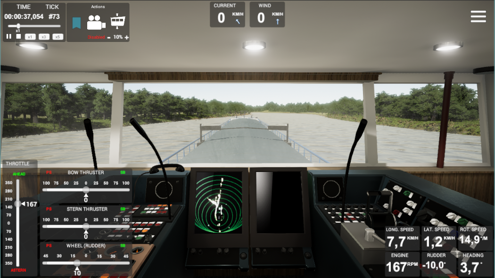
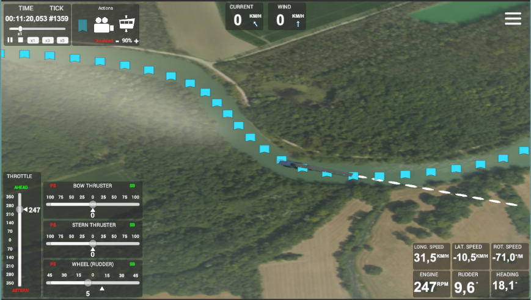
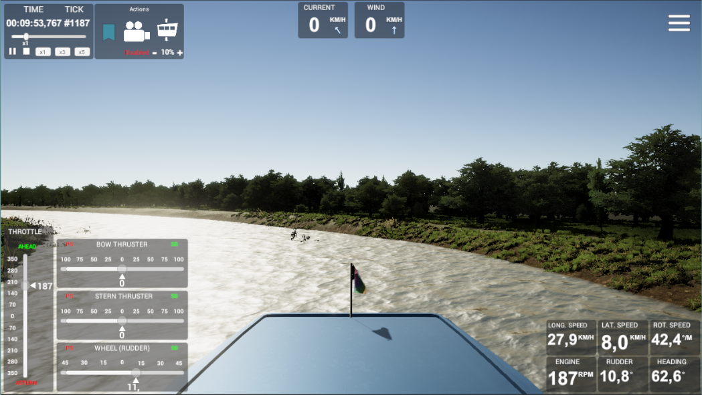
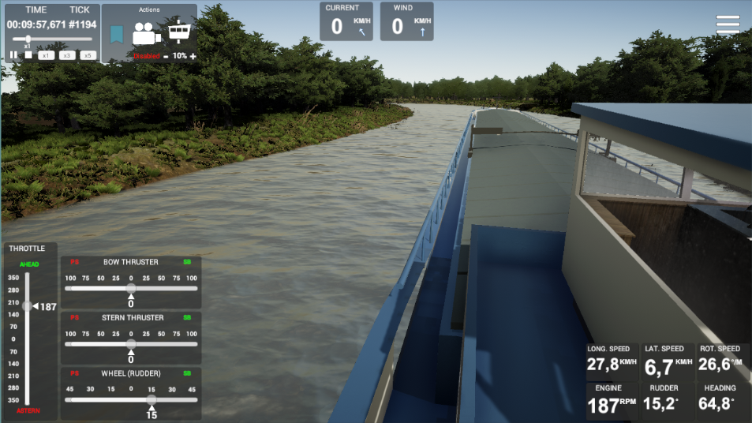
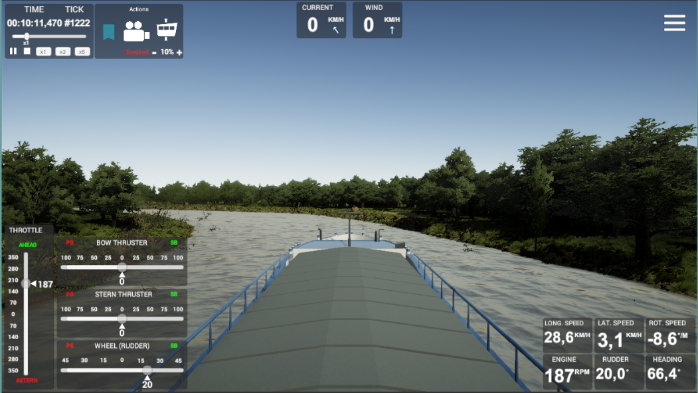
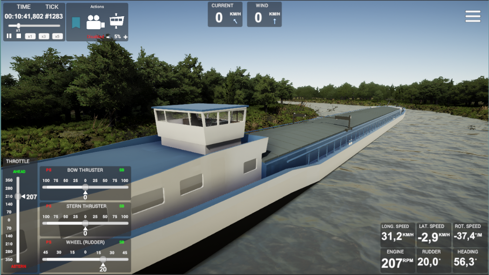
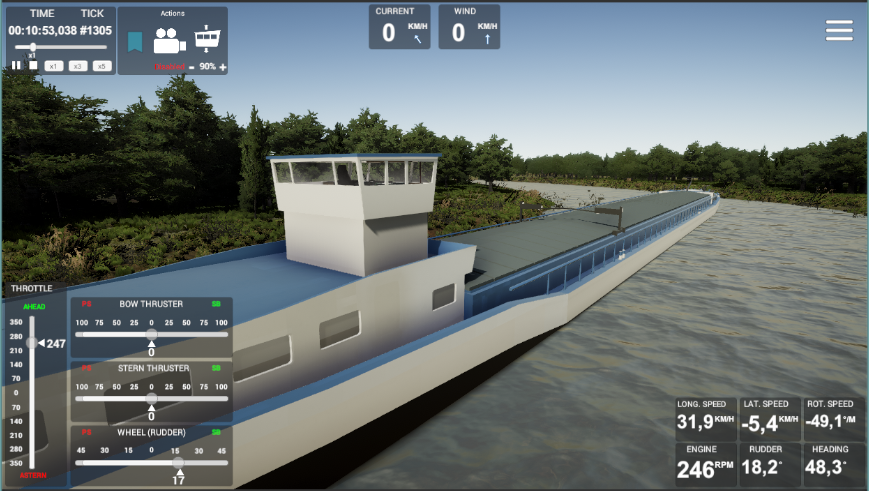

TrajectoNav
Low quality video taken with the in-game video capture (RockVr)







Project I worked on @ Fishing Cactus (between october 2018 to june 2019).
This is an barge boats simulator developped for navigability studies (inland navigation) in partnership with a specialized engineering company (DN&T).
The Unity part is built on top a DN&T DLL wich calculate the ship position and rotation according the inputs over time by the Unity layer. Being the only programmer assigned to that project I actually took care of almost all aspects of the programmation side of the project, such as (non exhaustive list) :
This is an barge boats simulator developped for navigability studies (inland navigation) in partnership with a specialized engineering company (DN&T).
The Unity part is built on top a DN&T DLL wich calculate the ship position and rotation according the inputs over time by the Unity layer. Being the only programmer assigned to that project I actually took care of almost all aspects of the programmation side of the project, such as (non exhaustive list) :
- Architecture design and implementation
- Input Handling (commands) and DLL responses impact
- Third-parties plugins (Weather Maker Pro, Rewired, RockVR, River Auto Material, ...)
- User graphical interfaces (GUI) & 2d map
- Simulation and replay modes
- Multiples camera point of views
I don't have any ownership over the code nor the project so I can't share any code/build.